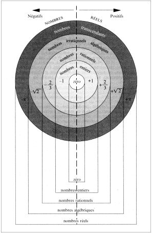

II Le chiffre, base de tout nombre
B) Les familles de nombres
|
1) Les Ensembles
de nombres
Depuis
peu, des mathématiciens ont éprouvé le besoin de traiter
les nombres non pas individuellement mais par groupes. Et c'est ainsi que
l'on a crée les ensembles ou familles de nombres.
Ces ensembles sont
le regroupement de différents nombres ayant les mêmes caractéristiques.
Ils ont été imaginé vers le début du siècle
par des mathématiciens allemands et italiens.
Les ensembles de nombres
sont comme suivant :
N
Les entiers naturels
C'est l'ensemble des nombres
entiers consécutifs supérieurs ou égaux à 0.
L'ensemble N fut crée par Peano
(1858-1932), et c'est de naturale en italien que provient la lettre
N.
Z
les entiers relatifs
C'est l'ensemble des entiers
positifs ou négatifs. Le Z, vient de zahl(nombre ) et zalhen
(compter), du fait que son inventeur, Dedekind(1831-1916)
était allemand.
D
Les nombres décimaux
C'est l'ensemble des nombres
avec un nombre fini de décimales. L'ensemble D est une notation
franco-française issue de la pédagogie des années
1970.
Q
les nombres rationnels
Tous nombre pouvant s'écrire
sous la forme d'un quotient. C'est encore Peano qui inventa cet ensemble,
Q venant de quotiente en italien.
R
les nombres réels
Tous les nombres. Mis pour real,
cet ensemble a aussi été crée par Dedekind.
C
Les nombres complexes
Ensemble des nombres de la forme
a + ib. L'emploi de la lettre C provient sans doute d'une convention
logique dans la lignée des autres.
2) Représentation
imagée des familles de nombres
Pour représenter
alors le système des ensembles de nombre, on eut recours à
une représentation imagée du principe des poupées
russes : chaque ensemble est compris dans un autre, sauf le dernier,
R, l'ensemble de tous les nombres réels :

|